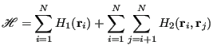
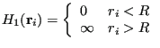
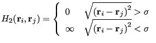
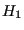
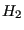
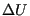
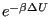
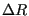

Next: Case Study 3: Hard-Disk Up: Monte Carlo Simulation Previous: Trial Moves
Change directory into your instructional-codes repository and issue a pull if you don't already see hdisk.c there. This code simulates disks confined
to a circle. The Hamiltonian for this system may be expressed as
|  | (91) |
|  | (92) |
|  | (93) |
 acts to keep the particles confined, and  prevents them from overlapping. One nice thing about using hard-disk Hamiltonians is that there is never a reason to evaluate a Boltzmann factor. Any trial move that results in an overlap or a particle crossing the boundary gives an “infinite” , so  is identically 0 and the trial is unconditionally rejected.
hdisk.c requires as user input any two of the following three
parameters:  , the radius of the circle in
, the radius of the circle in  ;
;  , the areal number
density of particles (# per square
, the areal number
density of particles (# per square  ); and
); and  , the number of
particles. The user may also specify
, the number of
particles. The user may also specify  , the scalar
displacement, and
, the scalar
displacement, and nc, the number of MC cycles, where
one cycle is  attempted particle displacements. Optionally, the code can generate configurational samples as simple text files or as a single XYZ-formatted trajectory (which looks like a concatenation of XYZ files), and in order to generate these samples,
attempted particle displacements. Optionally, the code can generate configurational samples as simple text files or as a single XYZ-formatted trajectory (which looks like a concatenation of XYZ files), and in order to generate these samples, traj_samp must be set greater than zero. The code reports the acceptance ratio, among other things:
One important aspect of any MC simulation code is how the particle
positions are initialized. Here, it is best to assign initial
positions to the particles such that the initial energy is 0 (i.e.,
there are no overlaps nor particles out of bounds.) Try to figure out
how the function init() in the program hdisk.c
accomplishes this.
As a suggested further exercise, use hdisk.c to determine a
reasonable displacement to achieve a 30% acceptance ratio at a
density of 0.5. Compare your results across differently sized systems
and runs with different numbers of cycles. For fewer than 10 cycles,
you will have large acceptance ratios because the initial condition
is not yet fully destroyed.
cycles,
you will have large acceptance ratios because the initial condition
is not yet fully destroyed.
Below is a plot of acceptance ratio vs.  for densities
 of 0.2, 0.4, 0.6, from a simulations of 200 particles. 2,000
cycles were performed for each run, and each had a unique seed. Are your results consistent
with this data?
of 0.2, 0.4, 0.6, from a simulations of 200 particles. 2,000
cycles were performed for each run, and each had a unique seed. Are your results consistent
with this data?
|
|
One advantage of the XYZ format is that we can use VMD to visualize our configurations, and even to make animations of our simulations. For example, suppose we generate a short 1,000-cycle MC trajectory of the hard-disk system at  = 0.7 and
= 0.7 and  = 100:
= 100:
cd cd cheT580-202035/instructional-codes/my_work mkdir hdisk_run cd hdisk_run gcc -O3 -o hdisk ../../originals/hdisk.c -lm -lgsl ./hdisk -xyz traj.xyz -traj_samp 1 -nc 1000 -rho 0.7 -N 100 -dr 0.5 # R = 6.74336; rho = 0.70000; N = 100; seed = 23410981 Results: Number of Trial Moves: 100000 Maximum Displacement Length: 0.50000 Acceptance Ratio: 0.48499 Reject Fraction Out-of-bounds: 0.09707 Reject Fraction Overlap: 0.90293 ls hdisk traj.xyz
Notice I provide the name of the trajectory file, indicating I want one sample per cycle. I also set the magnitude of the maximum displacement at 0.5  .
.
After the run finishes, the file traj.xyz appears. It looks like this:
head -10 traj.xyz 100 Generated by hdisk.c; all z-components are zero; all elements are H H 2.48776 1.78242 0.00000 H 5.80283 0.16579 0.00000 H 2.57789 -4.28715 0.00000 H -4.25852 0.68353 0.00000 H -5.95301 2.69712 0.00000 H 0.28903 -1.04400 0.00000 H 1.86426 -0.93249 0.00000 H -4.16984 1.87756 0.00000
We can use VMD to visualize this trajectory. If you are on a Windows 10 machine and you installed the Windows version of VMD, you can simply launch it from the start menu, and then navigate to
\\wsl\$\<distro>\home\<username>\cheT580-202035\instructional-codes\my_work\hdisk_run\and then just click on
traj.xyz to read it in. If you are on a Mac, you should be able to navigate straight to the file. In Fig. 7, I show three snapshots from this simulation, at cycle 0, 500, and 1000.
|
|
As another suggested exercise, consider generating a trial move in the following way:
cfa22@drexel.edu